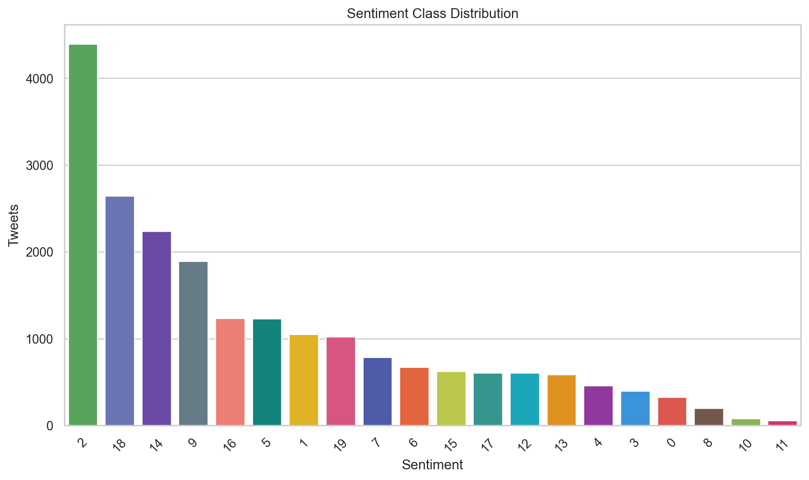
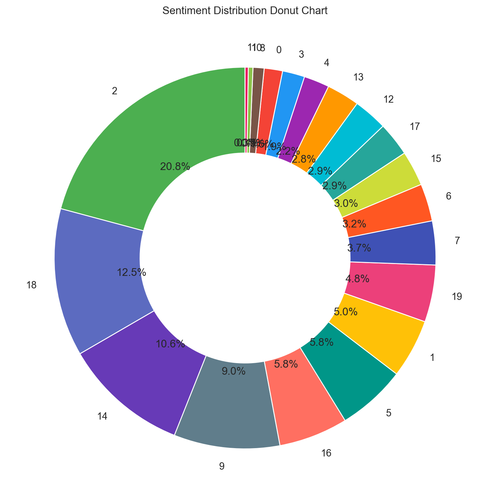
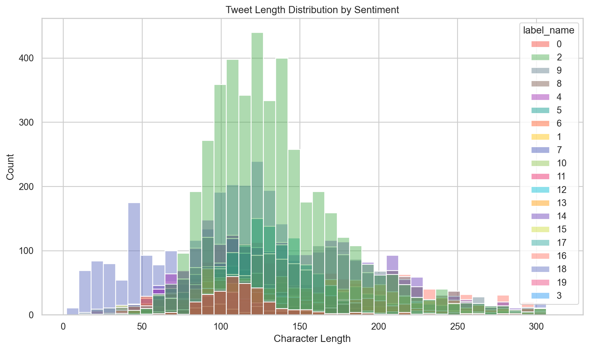
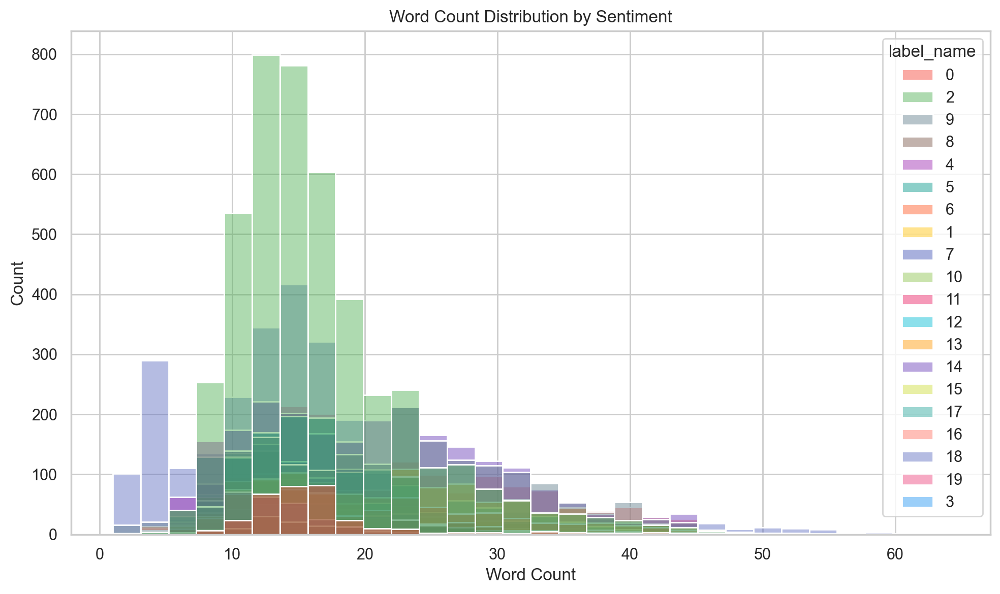
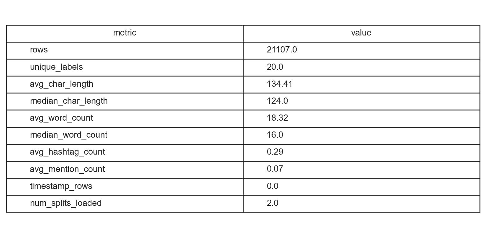

| metric | value |
|---|---|
| rows | 21107.00 |
| unique_labels | 20.00 |
| avg_char_length | 134.41 |
| median_char_length | 124.00 |
| avg_word_count | 18.32 |
| median_word_count | 16.00 |
| avg_hashtag_count | 0.29 |
| avg_mention_count | 0.07 |
| timestamp_rows | 0.00 |
| num_splits_loaded | 2.00 |
| model | accuracy | precision_macro | precision_weighted | recall_macro | recall_weighted | f1_macro | f1_weighted | roc_auc_ovr_macro | roc_auc_ovr_weighted | cohen_kappa | log_loss | avg_prediction_time_ms | timing_sample_size | total_prediction_time_seconds | model_size_mb |
|---|---|---|---|---|---|---|---|---|---|---|---|---|---|---|---|
| logistic | 0.7362 | 0.7226 | 0.7528 | 0.7540 | 0.7362 | 0.7289 | 0.7406 | 0.9730 | 0.9611 | 0.7093 | 1.2125 | 0.0795 | 200 | 0.3876 | 0.9386 |
Bar chart showing the number of tweets in each sentiment class.

Donut chart view of class balance across the dataset.

Histogram of tweet character lengths grouped by sentiment.

Histogram of tweet word counts grouped by sentiment.

Tabular summary of overall dataset statistics.
